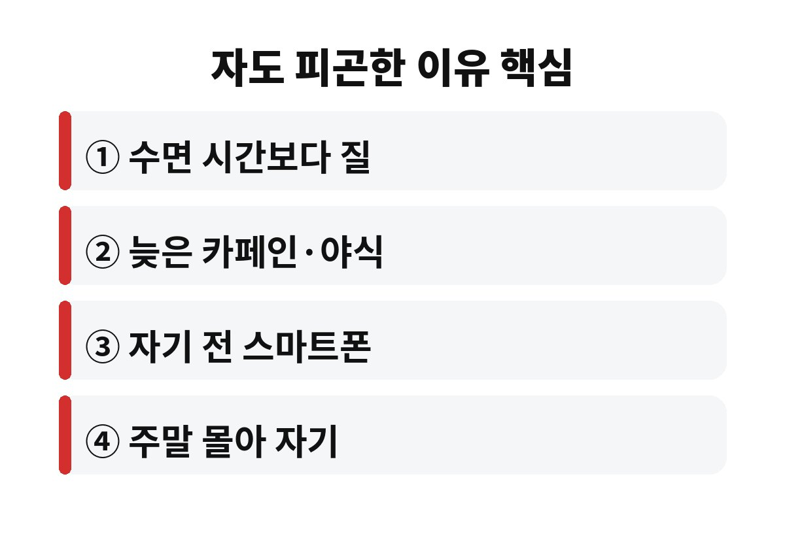
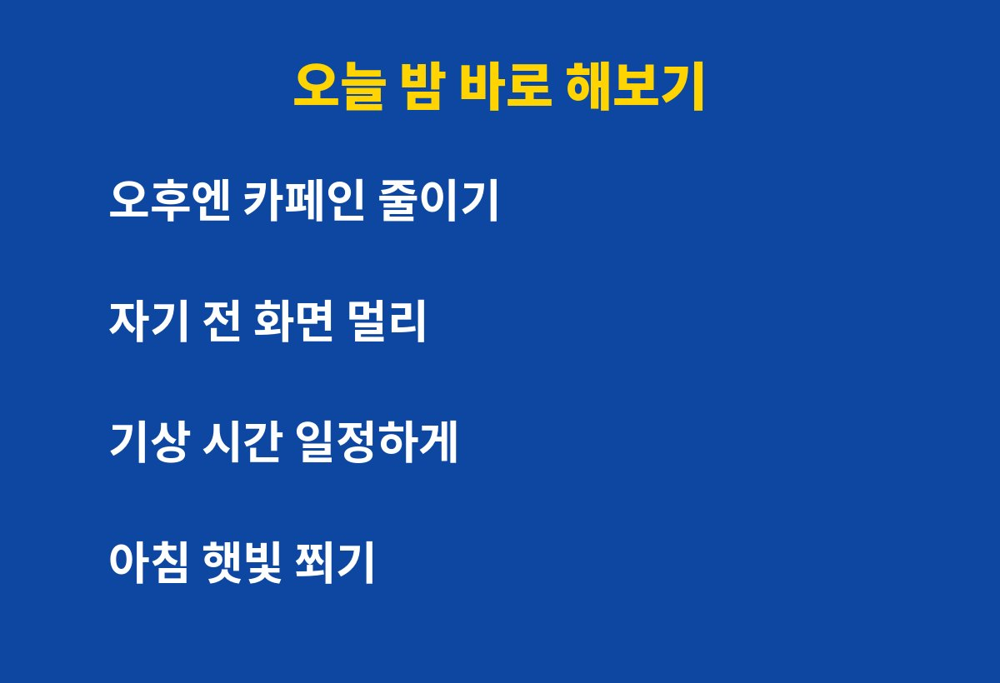

자도 피곤한 이유는 잠을 잔 시간이 아니라 잠의 질이 떨어졌기 때문인 경우가 많습니다. 7시간을 채워 잤는데도 아침이 무겁다면, 직장인이라면 특히 어떤 저녁 습관부터 의심해야 할까요?
흔히 성인은 하루 7시간 안팎의 수면이 필요하다고 이야기합니다. 그런데 이건 어디까지나 침대에 누워 있는 시간이 아니라 실제로 깊게 잠든 시간을 말하는 거예요. 누워서 스마트폰을 보다가 잠들고, 자다가 몇 번 깨고, 알람에 억지로 일어나면 시계로는 7시간이어도 몸은 덜 쉰 상태가 됩니다.
잠은 얕은 잠과 깊은 잠, 꿈을 꾸는 잠이 번갈아 오면서 몸과 뇌를 회복시킵니다. 이 흐름이 자주 끊기면 자도 피곤한 이유가 그대로 생기는 거죠. 그래서 "몇 시간 잤나"보다 "얼마나 끊기지 않고 잤나"를 먼저 보셔야 합니다.

가장 흔한 범인은 오후 늦게 마신 카페인입니다. 커피는 마신 뒤 몇 시간이 지나도 몸에 남아 있어서, 퇴근 무렵 한 잔이 한밤중 얕은 잠으로 이어질 수 있어요. 커피를 못 끊겠다면 오후부터는 디카페인이나 따뜻한 차로 바꿔 보세요.
두 번째는 늦은 야식과 술입니다. 술을 마시면 잠이 빨리 드는 것 같지만, 새벽에 자주 깨고 깊은 잠이 줄어드는 경향이 있습니다. 자기 직전에 배를 가득 채우는 것도 소화하느라 몸이 쉬지 못하게 만들죠.
세 번째는 자기 전 스마트폰입니다. 밝은 화면은 뇌에 아직 낮이라는 신호를 줘서 잠들 준비를 방해합니다. 영상이나 뉴스를 보다 보면 시간도 훌쩍 가고요. 잠들기 전 한 시간만이라도 화면을 멀리하면 달라지는 분이 많습니다.
평일에 부족했던 잠을 주말에 몰아 자는 분들이 많죠. 그런데 일어나는 시간이 평일과 크게 달라지면 몸의 생체 리듬이 흔들려서 월요일 아침이 더 힘들어질 수 있습니다. 이른바 사회적 시차 같은 상태예요.
주말에도 기상 시간을 평일과 한두 시간 안쪽으로 맞추는 게 좋습니다. 더 자고 싶다면 아침에 일어났다가 낮에 짧게 눈을 붙이는 쪽이 리듬을 덜 해칩니다. 낮잠은 길지 않게 하는 것이 요령이에요.

거창한 건 필요 없습니다. 아래 네 가지만 일주일 해 보세요.
| 오후 | 카페인은 점심 이후 줄이기 |
| 저녁 | 야식과 술은 잠들기 몇 시간 전에 마무리 |
| 밤 | 잠들기 전 화면 멀리, 방은 어둡고 시원하게 |
| 아침 | 같은 시간에 일어나 햇빛 쬐기 |
특히 아침 햇빛은 몸의 시계를 맞춰 주는 가장 쉬운 방법입니다. 날씨가 쌀쌀해져서 11월에는 집에만 있기 쉬운데, 출근길에 한 정거장 걸어 보는 것만으로도 도움이 됩니다.
다만 충분히 신경 써서 지냈는데도 몇 주 넘게 낮에 졸음이 쏟아지거나, 코를 크게 골고 자다가 숨이 멈추는 것 같다는 말을 듣는다면 수면무호흡 같은 다른 원인이 있을 수 있어요. 이럴 땐 습관 탓만 하지 말고 병원에서 상담받아 보시는 게 안전합니다.
여러분은 요즘 몇 시에 주무시고 아침 컨디션은 어떤가요? 댓글로 남겨 주세요. 도움이 됐다면 구독해 주시면 다음 건강 이야기도 바로 받아보실 수 있어요.
※ 이 글은 일반적인 건강 정보이며 진단·치료를 대신하지 않습니다. 증상이 지속되면 전문의 상담을 권장합니다.